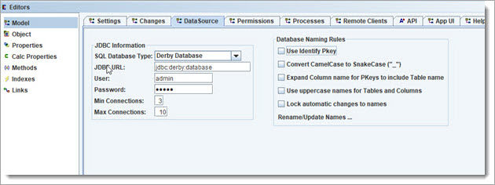

The Model is database-independent, which means that we can switch databases easily. So far, we have been using the OADataSourceObjectCache, which loads data into the cache and allows queries and CRUD operations. It is great for starting, entering test data, and for Applications without a ton of data. The next level would be to use JavaDB, which your application can use with zero admin - backups, compression, and other housekeeping are built-in, and with OA it can even act as a distributed database - more precisely "a distributed Object Graph" that works over the top of a datasource. At any time, we can choose to switch to another JDBC database or another DataSource.
Let us add JavaDB for now and get an idea of how the model generates the database's scheme.
Go to the Model Editor, and click on the "DataSource" tab. Set up to match:

Now that it knows what type of DB, the Database DDL script can be generated. A list of Database Types can be found in the main menu "View / JDBC Data Source Settings ...".
Select "Generators" from the menu, and click on "SQL Script ...", and it will ask for a file name to write it to. This script can then be used to create the database schema.
We will get more into the database/datasource later and show some apps using various databases. Outside of config settings and startup, there is no Application code required to directly work with the database. The Objects have built-in support to work with whatever datasources are being used, so it has all been automated.
One last thing on Database Scripts (DDL, SQL). The Model Editor's "Changes" tab keeps track of changes so that an update script can be generated. These changes can be cleared once you have generated the script so that the database is then up to date with the model. This allows for new releases to include an update script.